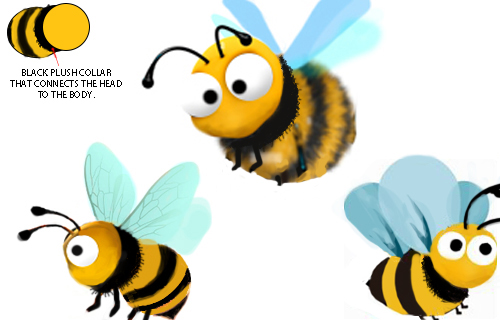

Modeling Requirements
For the most part, these characters will be presented in a God's-eye view, but
these models will also be used for close-ups of the cards and CG video. Btw, To
ensure better picture quality, we will render each action as a sequence of
frames separately.
Please make the lines as round and full as possible and avoid angles. Try to use
simple lines. The simpler the line structure, the better. The left
and right parts should be perfectly symmetrical. keep the light source in the
same position from character to character, with the light source from the top
down, bottom with a natural shadow. This ensures that the light source remains
constant when the character is flipped from side to side.
Our characters normally have pupils that are 20% of the size of the eyeball
(5:1).
Individual characters may be 15-35%, depending on the actual effect.
These model needs to ensure that we can successfully perform the common actions
in the reference video, and we will create actions for the characters to Moving,
Flying, Fighting, Skill, Resting, Injured, Dying in the game. please take care of the
DETAILS
Ladybug
「This is one of the main character of the game」

1.The above picture is for reference only, it meets about 90% of the needs.
Try adding a antenna. (Tentacles)
2.Please note that each dot on the back
of the ladybug should be a standard circle, not an irregular circle.(The
reference picture is irregular circle)
3.The structure of the 6 legs does not
need to be too complicated, it can be slightly simpler than the reference
picture.
Don't forget the individual flying parts of the internal wings.
4.Back come in multiple colors to differentiate between players.
Animation Reference:
https://www.youtube.com/watch?v=OBg8TFQddqc
https://www.youtube.com/watch?v=-uwZIdcflDE
Bee
「This is one of the main character of the game」
1.The above picture is for reference only, it meets about
75% of the needs. multiple options are needed to determine direction first.
2.The wings are 4, light blue, no mouth, 6 legs.
Animation Reference:
https://www.youtube.com/watch?v=pETQTk-FeOI
Dragonfly


1.The above picture is for reference only, it meets about 80% of the needs. multiple options are needed to determine direction first.
2.Two eyes are so close together that they don't need to be separated, No mouth,
The wings are 4 and 6 legs. The tail is divided into 6 sections and there
doesn't need to be any part at the end of the tail. The tail should go from thin
to thick and back again, and the end of the tail should be round naturally and
it's not pointy.
Animation Reference:
https://www.youtube.com/watch?v=CAJvPtblH4A
https://www.youtube.com/watch?v=-uwZIdcflDE